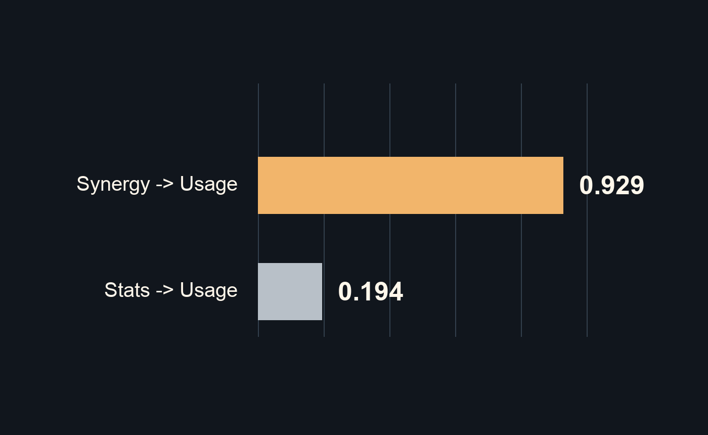
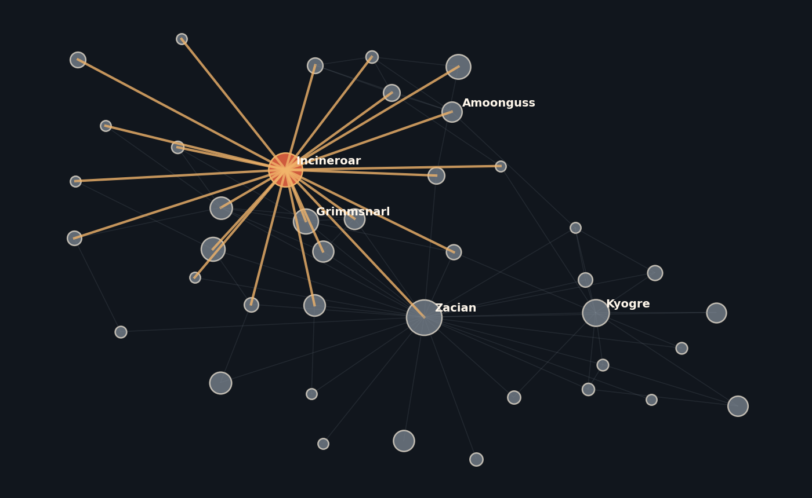
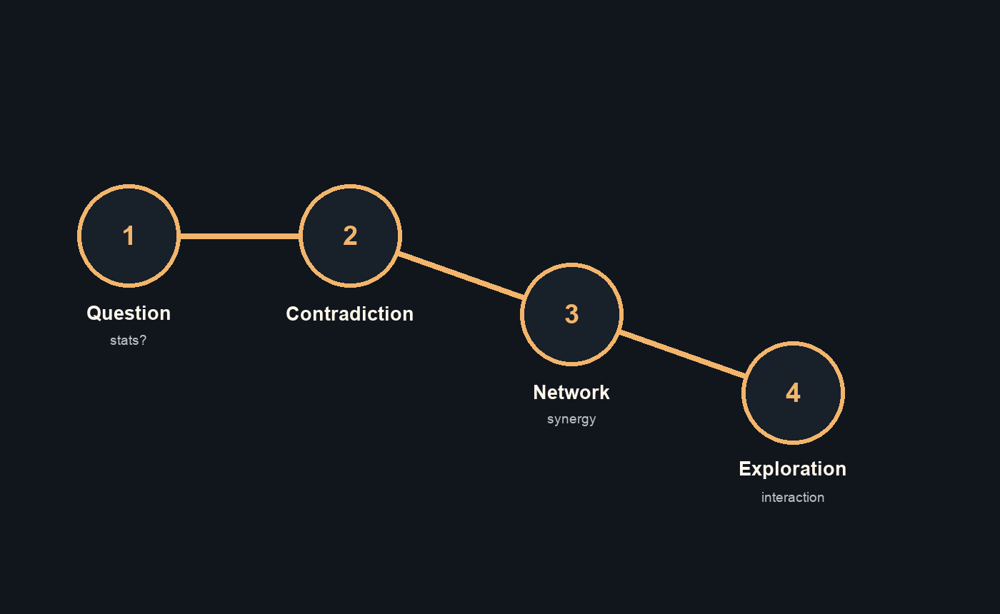

Our project explains a familiar but misleading assumption for novice audiences: in competitive Pokémon, higher base stats do not automatically mean a Pokémon is more successful. We will use narrative visualization to show that competitive strength is relational. A Pokémon becomes valuable not only because of its own stats, but because of how it fits into teams through common partners, moves, items, abilities, and strategic roles.
We use two related Kaggle datasets. The first is a competitive Pokémon database containing base stats, VGC 2022 legality, monthly usage, teammate co-usage, moves, items, and abilities. The second provides image references used as supporting visual assets. After preprocessing, our prototype uses 1,098 Pokémon/form rows, 2,606 teammate edges, and 2,967 build-usage rows. These are transformed into four program-ready tables: Pokémon nodes, team edges, build usage records, and image lookup records.
Our early analysis found that total base stats and usage have a weak correlation, about 0.194, while weighted team connectivity and usage are much more strongly related, about 0.929. This gives the story a clear finding: raw strength explains part of competitive success, but team synergy explains why some moderate-stat support Pokémon become central.

The main visual representation will be a programmatically generated force-directed team-synergy network built with D3. This network is the "main character" of the story. Each node represents a Pokémon. Node size encodes usage percentage, node color encodes primary type, edge thickness encodes teammate co-usage strength, and edge opacity helps de-emphasize weaker relationships. Clicking a node locks attention on that Pokémon, highlights its most relevant teammates, and updates a side panel with usage, rank, common moves, common item, common ability, and top teammates.
The new component of the design is the role-centered interaction. Rather than presenting a static ranking, users can move from an individual Pokémon to the local team ecosystem around it. This is effective for the narrative because it translates an abstract idea, "synergy," into visible structure: central nodes, thick links, and partner clusters. To scaffold novices, the story will first explain the encodings using annotated examples before asking users to explore the full network.

We chose a Martini Glass structure because the audience needs guidance before open exploration. The first part is author-driven: we introduce the raw-stat assumption, reveal contradictions, and explain the network encodings. The final part opens into user-driven exploration, where users can click Pokémon and test whether the synergy argument holds across other examples. This structure fits the assignment because it combines a clear narrative sequence with an interactive advanced visualization.
We will guide attention through staged annotations, selective highlighting, muted inactive edges, and smooth transitions between the comparison view and the network view. Text will be concise and explanatory, since the target audience is novice. Each new visual encoding will be introduced before the user needs it.

The current prototype already loads the cleaned CSV files in React, uses D3 for scales and force layout, and supports hover tooltips, click selection, reset behavior, teammate highlighting, and a details panel. Next, we will add stronger narrative annotations, transition timing, cluster labels, a clearer limitations note, and final visual polish.
Segel, E., & Heer, J. (2010). Narrative visualization: Telling stories with data. IEEE Transactions on Visualization and Computer Graphics, 16(6), 1139-1148.
Carbone, G. Complete Competitive Pokémon Database (May 2022). Kaggle. https://www.kaggle.com/datasets/giorgiocarbone/complete-competitive-pokmon-datasets-may-2022
Divyanshu Singh. Dataset of 32000 Pokemon Images & CSV, JSON. Kaggle. https://www.kaggle.com/datasets/divyanshusingh369/complete-pokemon-library-32k-images-and-csv
D3.js: Data-Driven Documents. https://d3js.org/
React. https://react.dev/